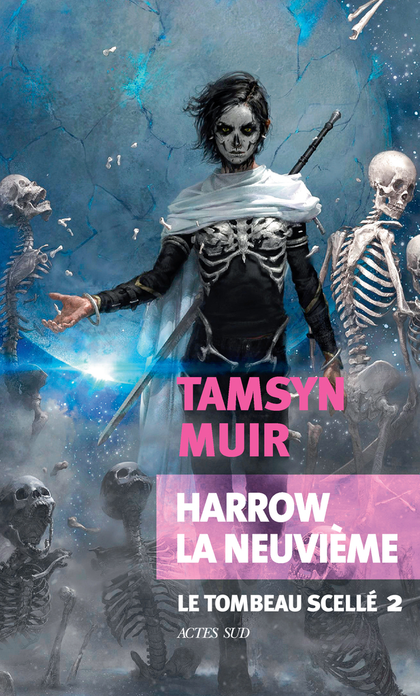
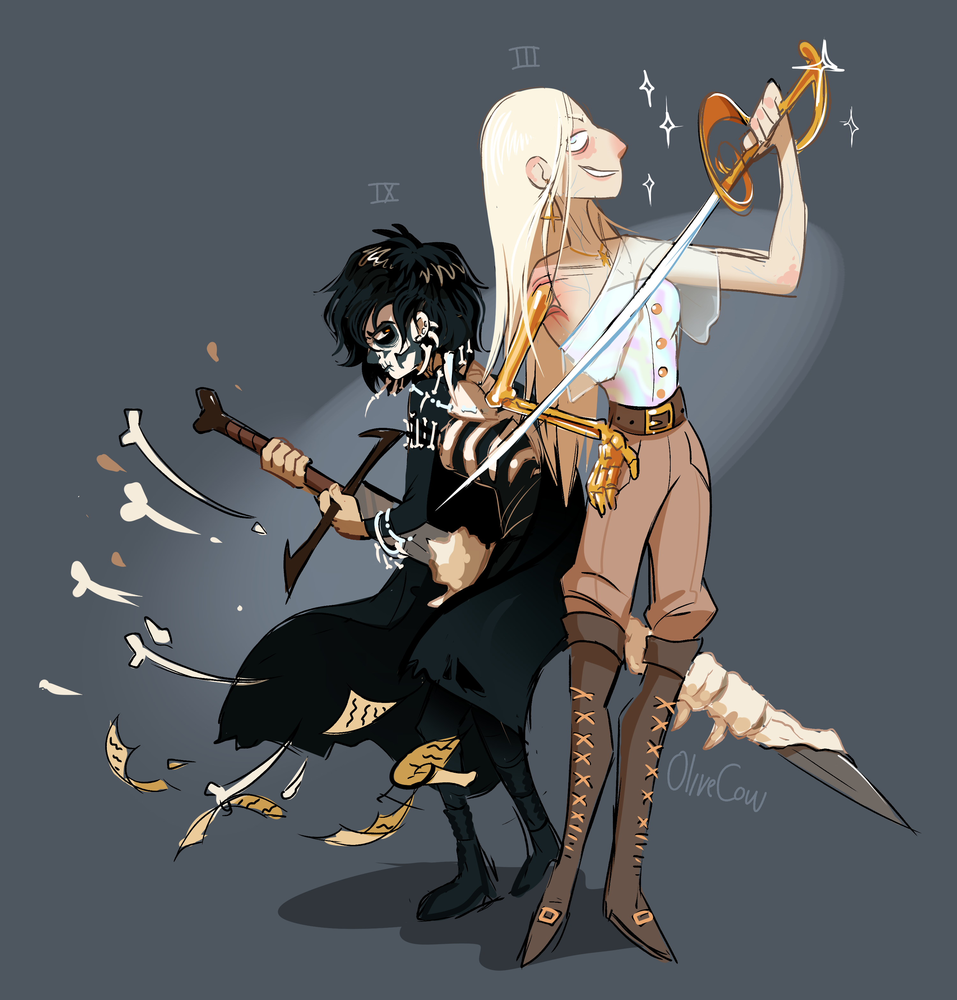
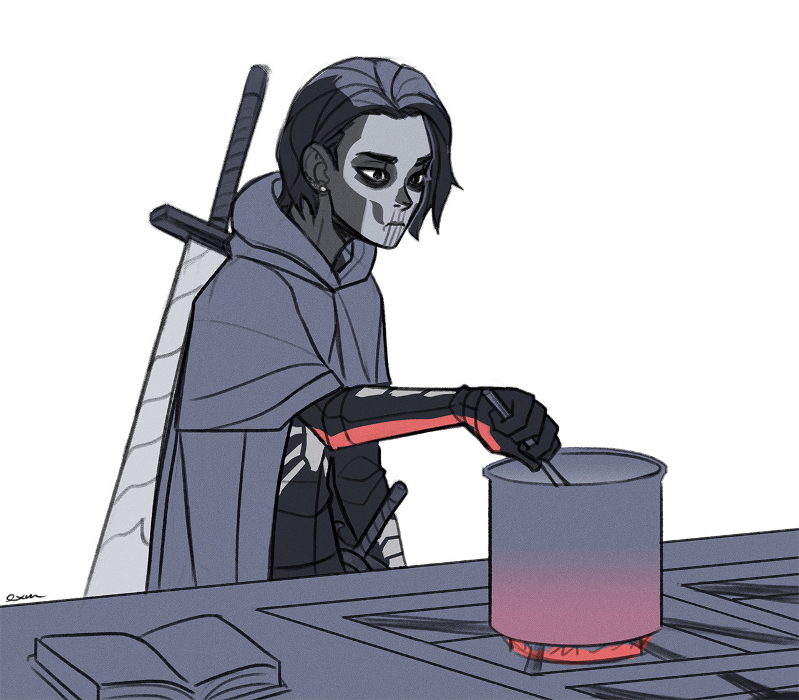

Je me suis lancé dans Harrow la Neuvième environ deux ans et demi après Gideon la Neuvième, qui m’avait laissé un souvenir de lecture chelou mais fun. Plonger sans préparation dans ce second tome du cycle du Tombeau scellé était toutefois une erreur. Après une petite centaine de pages, s’est ainsi posée la question de l’abandon pur et simple. À la place, j’ai parcouru quelques discussions sur Reddit (je ne suis pas le seul à avoir envisagé de balancer le bouquin par la fenêtre) et lu un résumé complet du livre précédent pour me rafraîchir la mémoire. Si cela n’a pas suffi à éclairer ma lanterne sur le moment, ces recherches m’ont au moins convaincu de ne pas lâcher l’affaire immédiatement.

Au début du roman, notre protagoniste et puissante nécromancienne Harrowhark Nonagesimus, dite Harrow, se trouve à bord du vaisseau de l’Empereur (un type qui, malgré son immortalité et son titre de “Premier Nécrolord” - souvent simplement appelé “Dieu” - s’avère plutôt sympa et sans chichi (il boit son thé avec des petits biscuits)). De là, l’intrigue (racontée à la deuxième personne du singulier), pour peu qu’on y comprenne quelque chose, se concentre grosso modo sur la préparation à un affrontement avec euh, un cadavre de planète (?), un monstre cosmique à la poursuite de l’Empereur et de ses acolytes (des personnages étonnants au comportement allant du cryptique à l’imprévisible). Globalement, Harrow est surtout très mal en point et nage en pleine confusion pour une raison qui nous échappe. Afin de complexifier tout ça, ajoutons qu’aucune mention de la très attachante protagoniste du premier tome - Gideon - n’est faite (??). Par contre, le récit opère des sortes de flashbacks qui nous replongent dans les événements dudit tome, à ceci près que rien ne colle, que ça ne s’est manifestement pas passé comme ça et qu’à ce stade notre perplexité atteint un niveau extrême (???).

L’effet produit est manifestement voulu et l’autrice néo-zélandaise Tamsyn Muir nous prive volontairement de tout un tas de clés de compréhension. On voit bien que certains personnages semblent mieux comprendre les événements que nous. Au fond, ce livre nous apprend le lâcher-prise. C’est en tout cas la méthode que j’ai adoptée : quitte à ne rien capter, autant essayer de profiter du moment. Et c’est vrai que c’est amusant. L’autrice a un vrai talent pour camper ses protagonistes (à commencer par l’ombrageuse Harrow) et dérouler des dialogues pleins de sarcasmes tout en manipulant des thématiques LGBT+ (Harrow et Gideon, Harrow et Ianthe,…). Car oui, il est aussi question d’amour dans ce livre. Quant à l’univers, il mélange toujours science-fiction et dark fantasy, avec profusion de cadavres ambulants et de squelettes animés dans des décors gothiques. Même s’il reste concentré sur un petit nombre de personnages clés, ce roman donne aussi un léger aperçu du monde extérieur et nous confirme que non, l’univers du Tombeau scellé n’est pas uniquement peuplé d’une ou deux douzaines de personnes et de quelques tas d’ossements.

Entre la protagoniste en pleine confusion, les flashbacks volontairement incohérents, les nécromanciens immortels indéchiffrables et un lore aux règles souvent opaques, c’est peu dire que ça n’a pas été évident d’aller jusqu’au bout. Il faut donc reconnaître à Tamsyn Muir une force de persuasion et un vrai talent d’écriture pour avoir réussi à me faire tenir environ quatre-cents pages dans le brouillard complet (soit à peu près les deux tiers du livre) sans me faire péter un câble. Au passage, j’ai pu constater que la tétralogie (dont le quatrième tome n’a pas encore paru) a agrégé une large communauté responsable de quantités de fanarts et de fanfictions, indication que cette série a bien quelque chose de spécial. Est-ce que je vais remonter en selle pour Nona la Neuvième, son troisième opus ? Peut-être pas tout de suite, mais je ne laisse pas tomber.
Titre original : Harrow the Ninth / Sortie originale (anglais) : 2020 / Version française : 2023 (traduction : Stéphanie Lux)
Images :